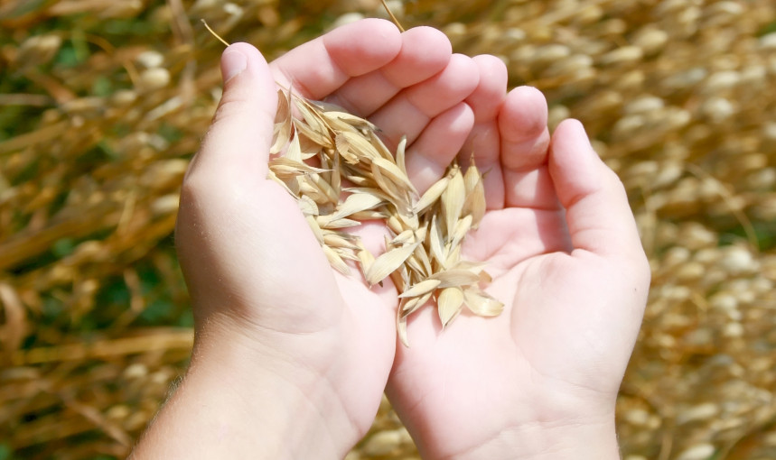

BPS Seedline
First Baptist Church of Milford

BPS/Seedline is a means for the local church to have hands on involvement with Bible publishing for the world. This is accomplished by taking the printed page and collating it, folding the covers, putting the Scripture in the cover, stapling it, cutting the book and boxing them for the Field. This ministry is enjoyable, easy, and eternal.